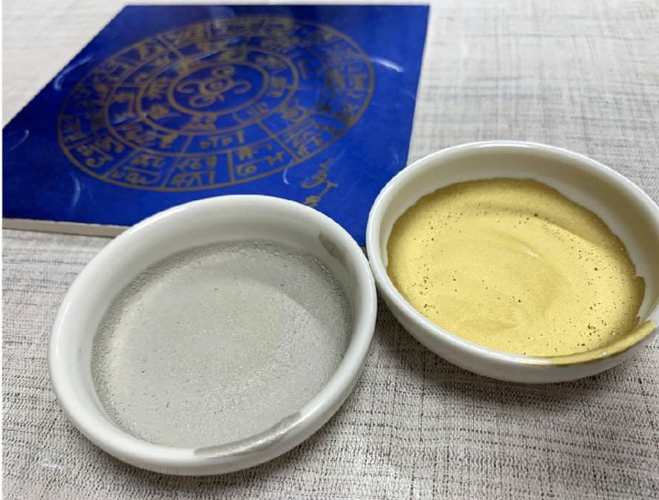
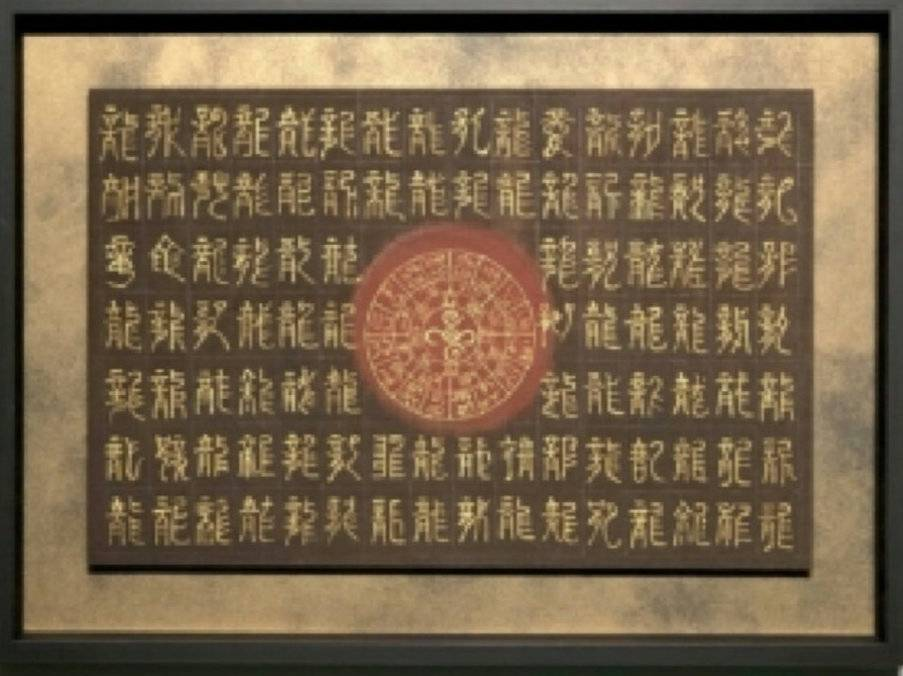
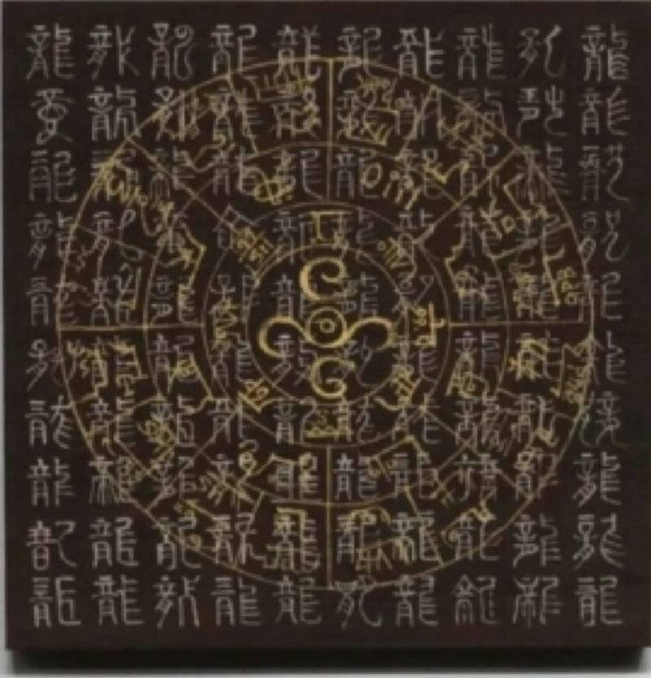
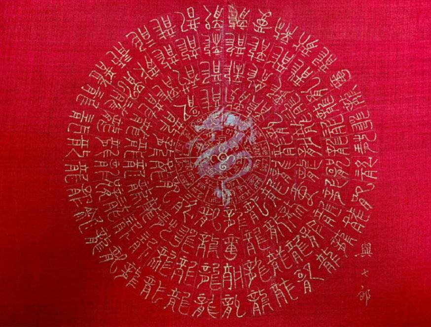
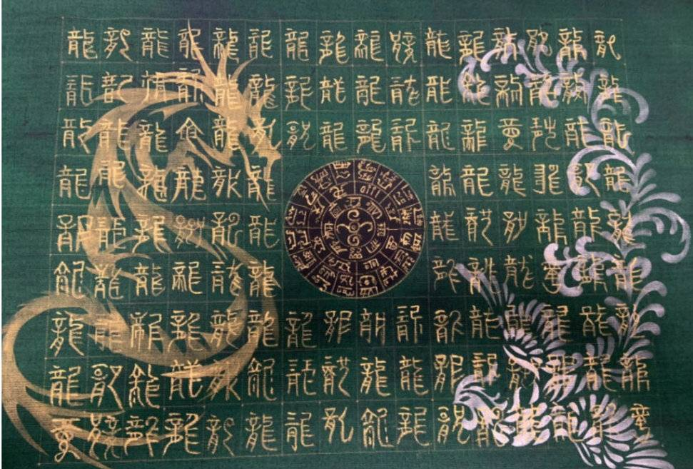

心を静める。 集中する。 内観する。
日々の仕事や家庭に追われ、
心身の余裕を失っていないだろうか。
常に思考や情報が巡り、
休んでも頭が休まらない。
自分と静かに向き合う時間。
精神的な豊かさを感じる瞬間。
これからの人生を整えるために。
一度、立ち止まってみませんか。
本来の自分を取り戻す
整龍は、単なるアートや癒しの時間ではありません。
「気」と「場」を整え、自分自身を調律するための体験です。
描くのではなく、整える。
波動を知り、身体をゆるめ、深い集中の中で描く。
その一連のプロセスを通して、日常から人生そのものが整っていく。
これは、人と空間を整えるための統合的体験です。
体験の流れ
波動解析
現在の心身・エネルギー状態や傾向を読み解き、今必要なテーマを明確にします。不足を補うのではなく、まずは「自分の状態を知る」ことから始まります。
ヘッド＆ハンドコンディショニング
身体の緊張をゆるめ、気を鎮めます。思考のノイズを静めて深いリラックス状態へ導くことで、内観しやすく、描くための土台が整います。
描く瞑想（龍体フトマニ）
整った状態でフトマニを描く、瞑想的な創作体験。集中、無心、静けさの中で、自分自身と深く向き合う時間となります。
空間の調律
完成した龍体フトマニ図は、単なる作品ではありません。自宅や職場に飾ることで「場を整える存在」となり、日常空間に落ち着きと調和をもたらします。
作品と素材

純金・純銀泥
神聖な輝きを放つ純金と純銀の泥を使用。物質的な美しさだけでなく、そのエネルギーそのものを紙へと定着させます。

フトマニ百龍図
「思考のノイズを静める百龍結界」
テーマ
「内側を整え、本来の自分へ戻る」
意味
100体の龍が乱れた思考・感情・空間を整え“本来の中心”へ戻していく図。
龍は「外へ向かう力」ではなく内側を浄化し静けさを取り戻す象徴。
こんな人へおすすめ
- 思考が止まらない
- 脳疲労が強い
- 不安感がある
- 人に振り回される
- 空間が落ち着かない
- 睡眠の質を整えたい
得られるイメージ

重ね百龍図
「停滞を突破する増幅の龍図」
テーマ
「陰陽統合・現実化・増幅」
意味
金と銀、陽と陰、行動と直感。
二つのエネルギーが重なり合うことで“願い”ではなく“現実化する力”を高める龍図。
重ねるというのは、エネルギー増幅の象徴。
こんな人へおすすめ
- 行動したいのに止まる
- 流れを変えたい
- 仕事運を上げたい
- 現実を動かしたい
- 勝負のタイミング
- 経営者
得られるイメージ

円（縁）龍図
「人と運を繋ぐ円満龍図」
良縁を巡らせる龍の円
テーマ
「縁・循環・豊かさ」
意味
円は、“循環”と“繋がり”の象徴。
人・お金・仕事・愛情。人生の流れを円滑にし、必要な縁を引き寄せる龍図。
赤は生命力・情熱・活力。
こんな人へおすすめ
- 人間関係を整えたい
- 良縁を引き寄せたい
- 商売繁盛
- 恋愛運・家族運・人脈運
得られるイメージ

フトマニ132龍鳳図
「攻めと守りを統合した最上位龍図」
龍と鳳凰が人生を守り導く
テーマ
「守護・調和・成功」
意味
龍は“上昇”、鳳凰は“調和と再生”。
陰陽二つの存在が融合し人生を守りながら前へ進める図。
132という数は“完全性”や“統合”を象徴する特別な構造。
こんな人へおすすめ
- 人生の転換期
- 独立・挑戦
- 大きな決断
- 自分を守りたい
- 家族を守りたい